2017.11.15Start
Start
修学旅行、ハウステンボスが始まりだったかな。
そこがきっかけでLINEで色々話して、仲良くなったね。
LINEでの告白でいいのかな、、って悩んでたけど、受け入れてくれてありがとう。
ここまで長く続くなんて思わなかったし、まさか結婚まで考えるようになるなんて思いませんでした。
でも、彩乃と出会えて本当に嬉しいです。
2017.12First Xmas
初めてのクリスマス
付き合ってすぐに誕生日とクリスマスでごめんなさいでした。色々大変だったよね。笑
綺麗なイルミネーション、お花の数々、その中で撮ったチップとデールのぬいぐるみの写真。
この写真はお気に入りです！！
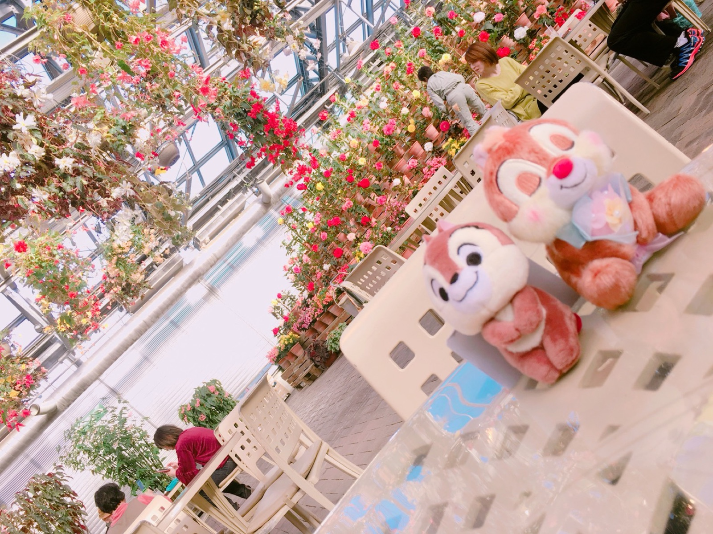
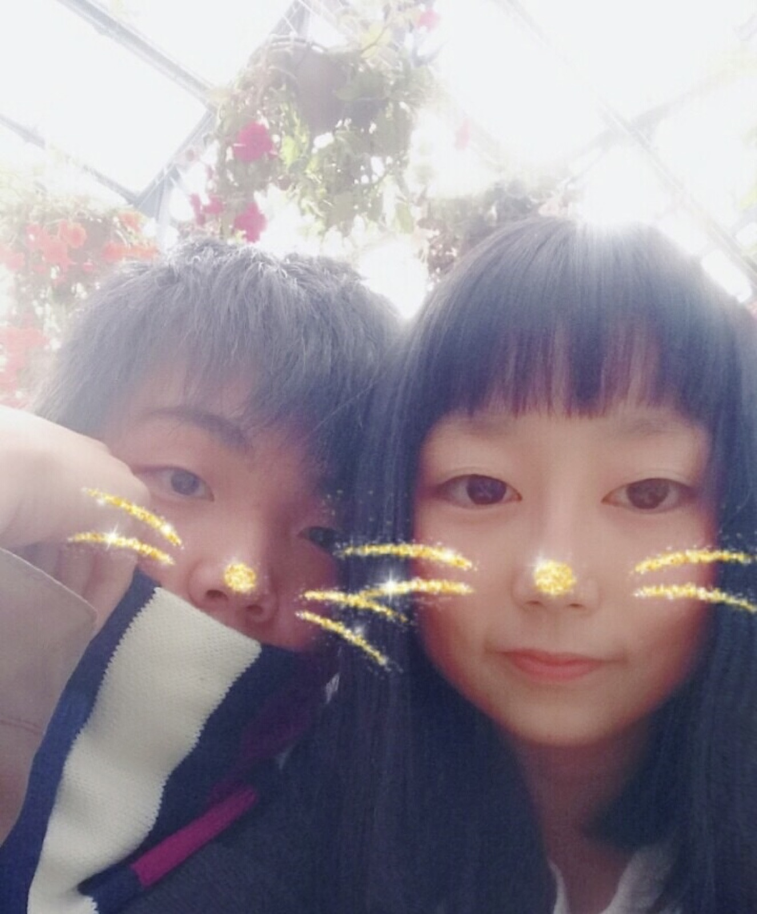
2018.02.14First Valentine
初めてのバレンタイン
初めてのバレンタイン。写真残ってるよ！！
最近は食べれてないけど、彩乃のこのブラウニー大好き。
彩乃のクッキーも好きだけど、ブラウニーの方が好き！！
あとこの時の、小さな手紙。彩乃は気づいてないかもしれないけど、
ずっと財布に入れて持ち歩いてます。お守りです。
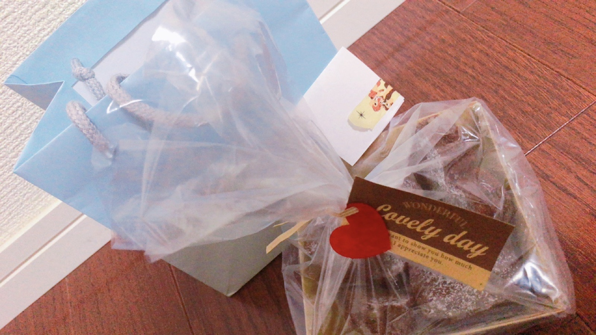
2018.04.04First Disney
初めてのディズニーデート
おれが選んだ青色のペアルックの服着てディズニーデート。
そう考えるとこの服もほぼ８年目なんだね。長持ちしてるね。笑
歩き疲れてベンチで休んだり、ステラルーのお揃いのキーホルダー買ったり。
たくさん写真撮って、その写真は今もずっと記憶に残ってて、凄くいい思い出の一つです。
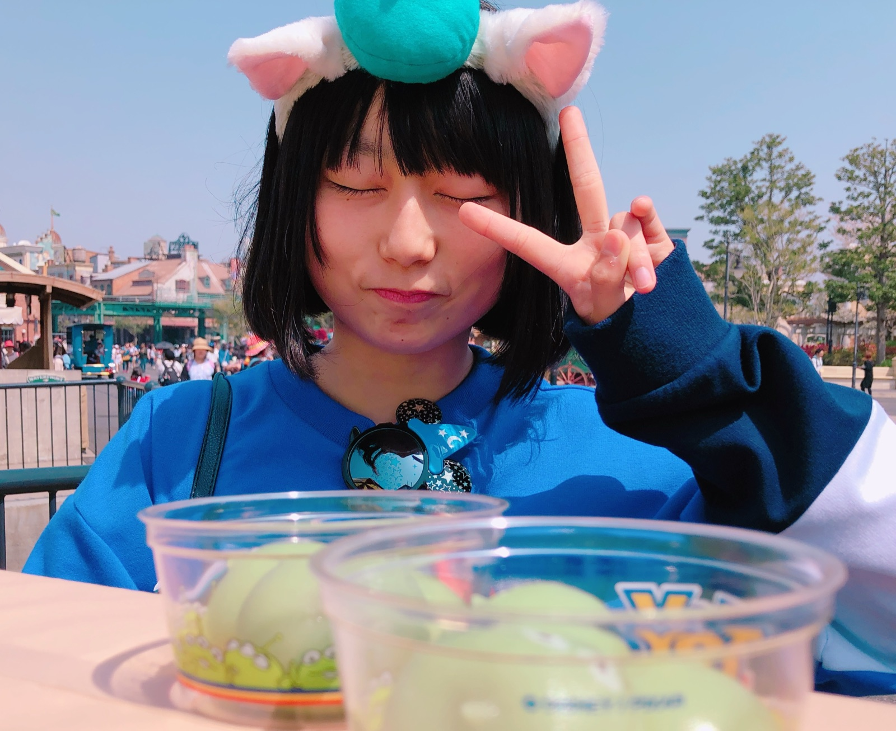
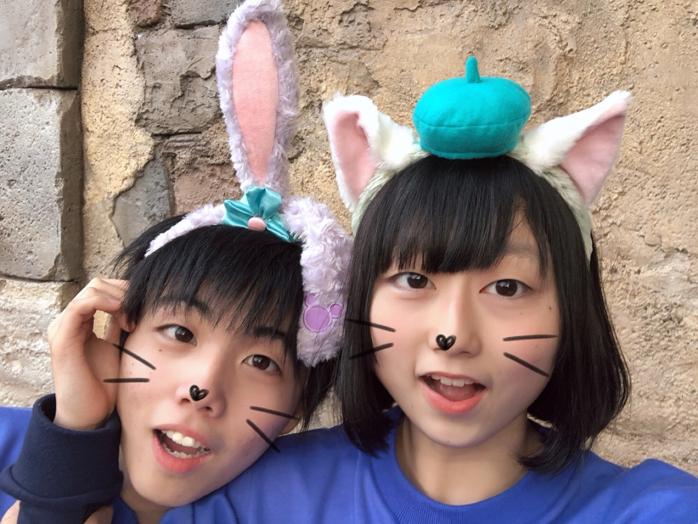
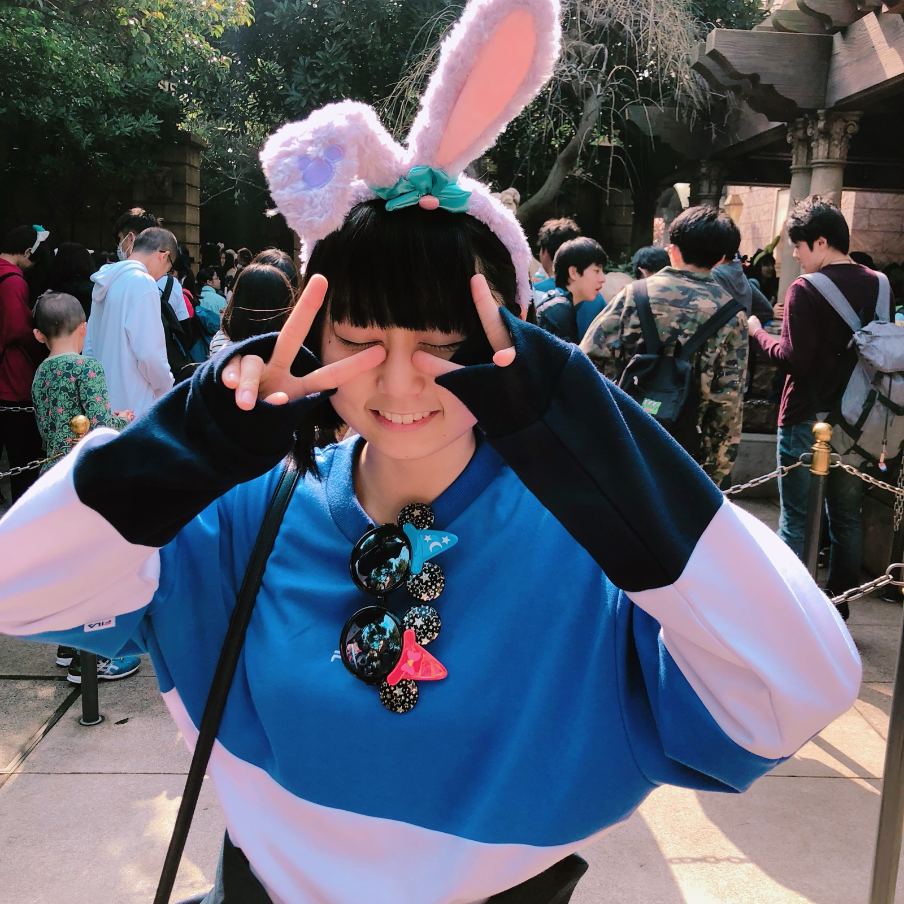
2018.08.25First Fireworks
初めての花火大会
彩乃の浴衣姿とっても可愛い。なんで彩乃が浴衣着て準備凄くしてくれてるのに、この人は部屋着みたいな格好なんなんでしょうか。ごめんね。
長良川の花火大会、有料化になったり、しょぼくなったりで最近行ってないね。浴衣はまた見てみたいな！浴衣デートしたいね。
まともな花火大会の写真がなかったから、2018年5月頃に観に行ったハンドボールの試合のお気に入りの写真を載せとくね！笑
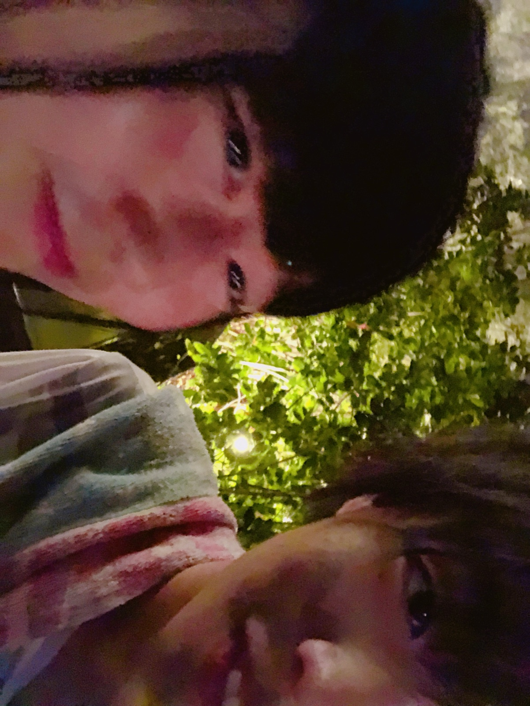
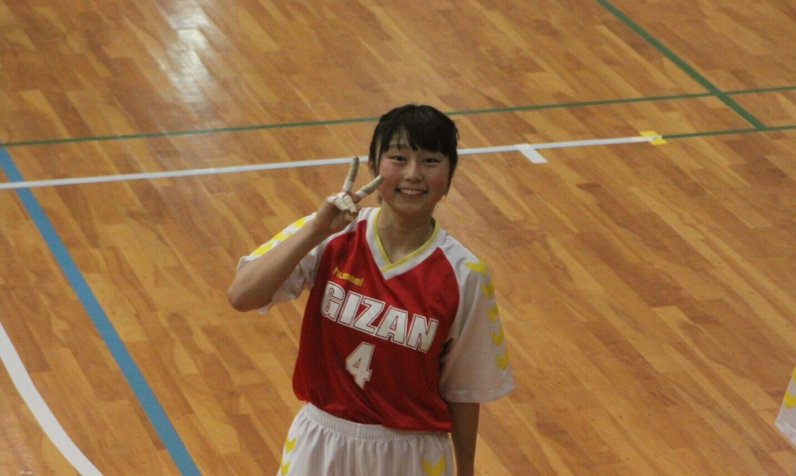
おまけPictures
おまけの写真
ディズニーの思い出の画角。
初めてのプリクラ。
修学旅行の女子部屋。（メガネ嫌だ）
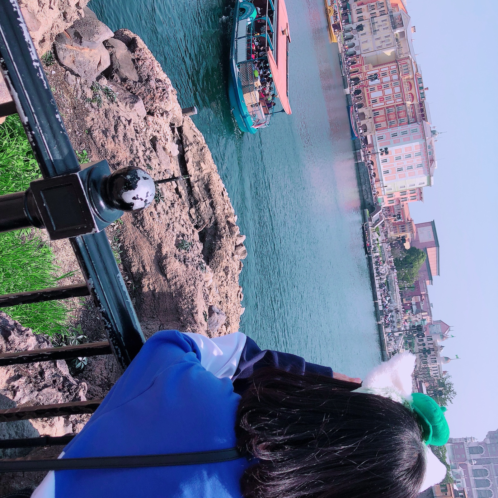
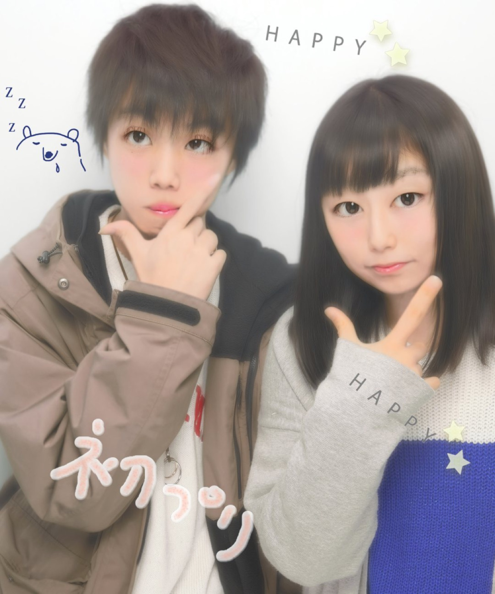
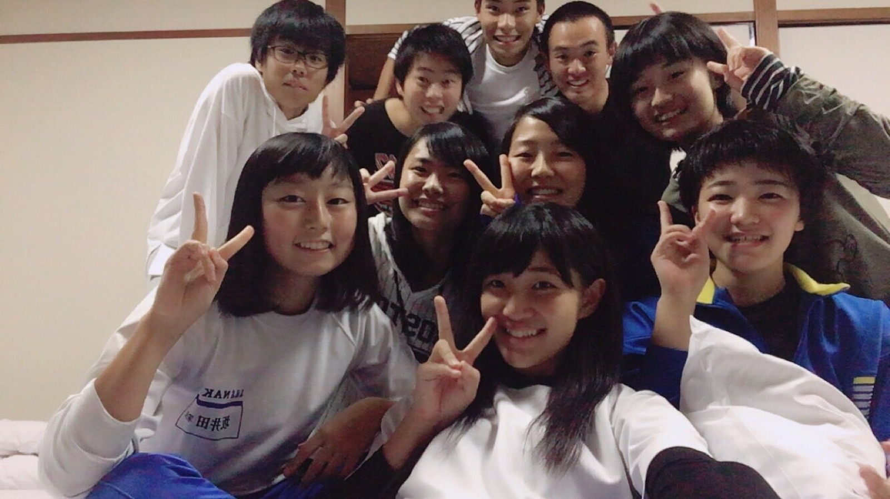
おまけ2Pictures
おまけパート２
コメダでお勉強！
４ヶ月記念andホワイトデー！
微かな記憶だけど、あの青い服（🇪🇪）はホワイトデーのお返しだったかな？
初めてのホワイトデー、悩みに悩んでマーサだった。笑
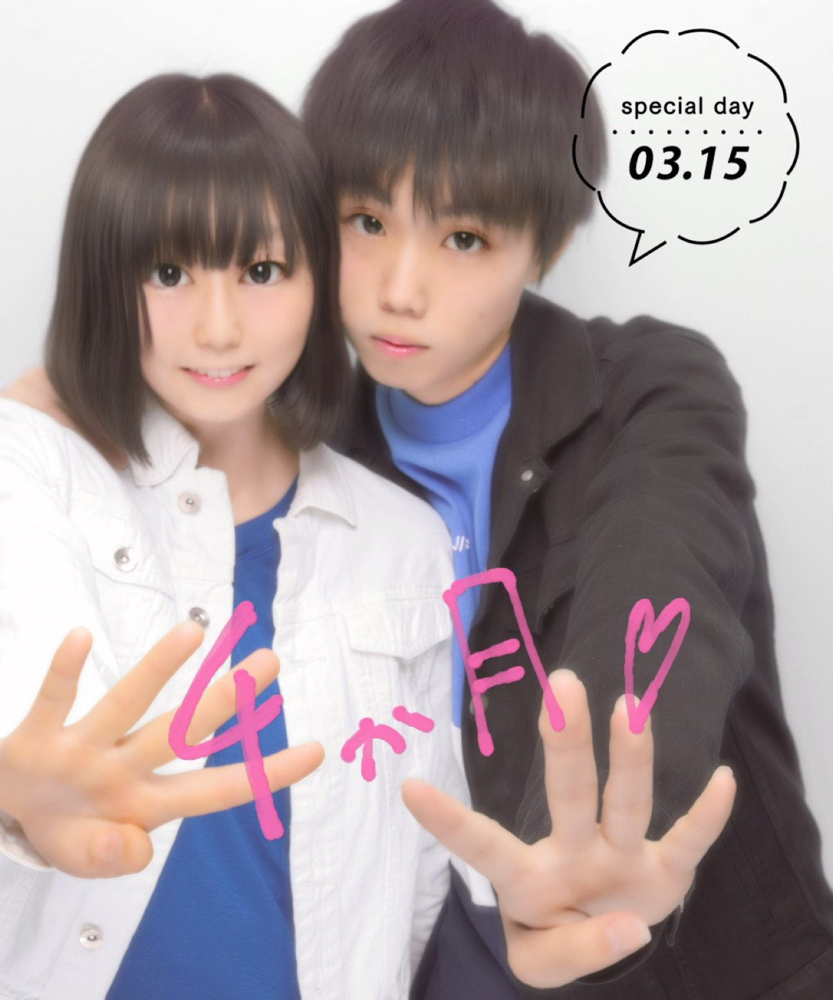
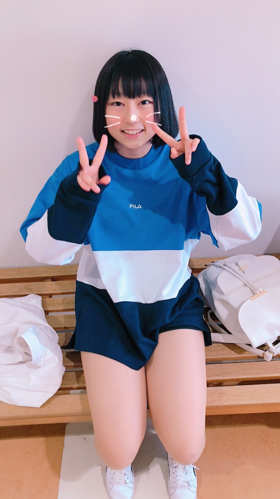